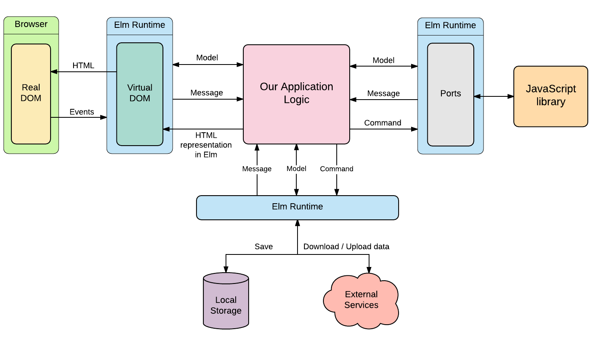
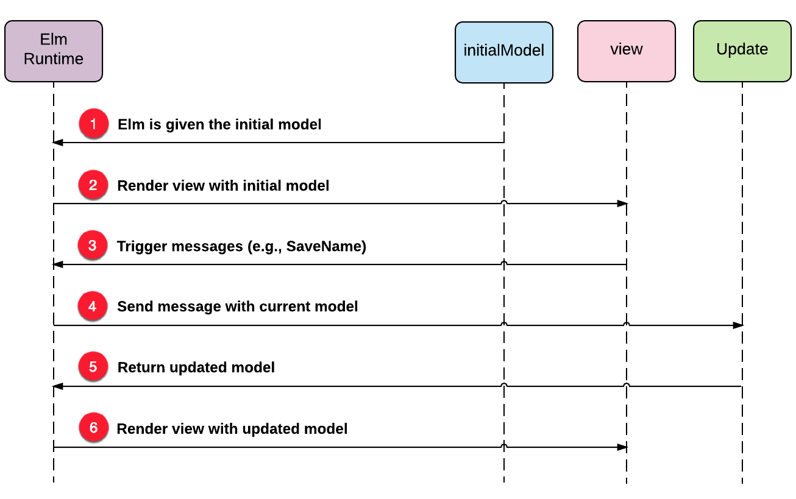
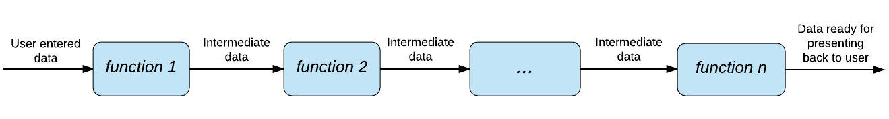

Jedním z důvodů spolehlivosti Elmu je to, že můžeme psát aplikace s použitím čistých funkcí. Čisté funkce přijmou vstup, provedou výpočet a vrátí výstup. To je celá jejich práce. Nevykonávají žádné operace, které vytvářejí vedlejší účinky, jako je vyslání HTTP požadavku ke vzdálenému serveru nebo ukládání dat do lokálního uložiště.
V odstavci Vedlejší účinky sekce "Čisté funkce", jsme se dozvěděli, co to vedlejší účinky v souvislosti funkcemi jsou. V této sekci si povíme více o tom, jak ovlivňují celou aplikaci.
Jedním ze základních pravidel, které musí všechny čisté funkce dodržovat je to, že výraz je vyhodnocen na stejný výsledek bez ohledu na souvislosti. To znamená, že máme zaručený stejný výstup pro stejný vstup libovolně krát opakovaný.
Nebyl by náš úděl programátora mnohem jednodušší, kdyby každý řádek kódu byl částí čisté funkce? Usnadnilo by se uvažování o výstupech z našeho programu. Snadněji bychom nalézali příčiny chyb. Testování by bylo rovněž jednodušší. Vytvořili bychom si testovací sestavu vstupů, jež bychom aplikovali na testovanou funkci. Kdyby funkce vrátila očekávaný výsledek, mohli bychom si být jisti že se chová podle předpokladů.
Skutečný svět je chaotický
Skutečný svět je ve skutečnosti velmi nepřehledný. Kdybychom měli psát pouze čisté funkce, pravděpodobně bychom skončili u nepotřebných programů. Ty by nebyly schopny přijmout žádný vstup od uživatele nebo prezentovat výstup na obrazovce nebo vyzvednout data ze vzdáleného serveru. Kdybychom měli funkci, která přijme něčí jméno jako vstup a pokouší se jej zobrazit na obrazovce, mohli bychom takovou funkci označit jako čistou? Odpověď je, že nikoliv.
Nejobvyklejším způsobem interakce programu s okolním světem je prostřednictvím vedlejších účinků. Následující definice vedlejších účinků z Wikipedie vysvětluje, proč jsou jejich důsledkem složité a nepřesné aplikace.
"O funkci nebo výrazu se řekne, že má vedlejší účinek, pokud mění nějaký stav nebo má pozorovatelnou interakci s voláním funkce nebo s okolním světem. Určitá funkce například, může měnit globální nebo statickou proměnnou, měnit některý z jejich argumentů, vyvolávat výjimku, zapisovat data do obrazovky nebo souboru, číst data nebo volat jinou funkci s vedlejším účinkem. Při existenci vedlejších účinků může být chování programu závislé na historii, to jest na pořadí výpočtu. Porozumění a odladění funkce s vedlejšími účinky vyžaduje znalost souvislostí a případně jejich historie." - Wikipedia.
Spásou je Elm runtime
Jak tedy zachází Elm s takovouto hádankou? Používá poměrně chytrou techniku k ošetření vedlejších účinků, pramenících z interakce s okolním světem. Abychom tuto techniku pochopili, vraťme se zpět k registračnímu formuláři, který jsme vytvářeli v sekci Skladba EA - část 2. Funkce view tam přijímá model User a vrací nějaký kód Elmu, reprezentujícího HTML, schopného generovat sdělení.
view : User -> Html Msg
view user =
...Je zásadní pochopit, že se nemusíme starat o renderování kódu HTML nebo jak nasměrovat sdělení, vycházející z textových polí a tlačítek do naší funkce update. O všechno se postará samotný runtime Elmu.
Jedním způsobem náhledu je představa, že je náš kód umístěn v ochraném zámotku, kde je všechno deterministicky určeno. Vždy můžeme říci, jaký bude výstup pro daný vstup. Mimo zámotek toto říci nemůžeme. Obrázek dole ukazuje, jak runtime Elmu chrání náš kód před vnějším světem, který je protkán vedlejšími účinky.

Uživatelské rozhraní není jediný aspekt vnějšího světa, který produkuje vedlejší účinky. Jsou také jiné. Většinu situací, při kterých potřebuje Elm komunikovat s vnějším světem, lze rozdělit do dvou kategorií:
1. Požádat runtime aby něco udělal.
Zde je několik příkladů:
- Poslat a přijmout data ze vzdáleného serveru HTTP.
- Uložit data do lokálního uložiště.
- Generovat náhodná čísla.
- Požádat knihovnu JavaScriptu aby provedla nějakou operaci.
2. Být uvědoměn, že se něco děje.
Zde je několik příkladů:
- Naslouchat a čekat na sdělení webového soketu.
- Naslouchat a čekat na změny lokace.
- Naslouchat tikotu hodin.
- Naslouchat a čekat na výstup, generovaný knihovnou JavaScriptu.
Elm poskytuje příkazy, které ošetřují situace z první kategorie a subskripty, které ošetřují situace z druhé kategorie.
Všechno jsou data
Jak již bylo zmíněno v sekci Skladba EA - část 1, funkce beginnerProgram z modulu Html je zodpovědná za propojení funkcí pro náš počáteční model, view a update.
main : Program Never User Msg
main =
beginnerProgram
{ model = initialModel
, view = view
, update = update
}Na funkci beginnerProgram
můžeme nahlížet jako na pomocníka runtime Elmu. I když se postará o propojení, je to nakonec runtime, který renderuje HTML a směřuje sdělení ke správným funkcím. Již jsme viděli, jak runtime koordinuje interakci mezi různými funkcemi v našem kódu. Zde to máme znova:

Jak se ukazuje, funkce initialModel, view a update nehovoří mezi sebou nebo s okolním světem přímo. Runtime Elmu ošetřuje všechny uvedené interakce. V důsledku toho mohou být tyto funce čisté. I když funkce initialModel nepřijímá žádné vstupy, vždy vrací tentýž záznam.
initialModel : User
initialModel =
{ name = ""
, email = ""
, password = ""
, loggedIn = False
}Funkce view rovněž pro tentýž model vždy vrátí stejný výstup HTML. Funkce update může vypadat trošku komplikovaně.
update : Msg -> User -> User
update message user =
case message of
SaveName name ->
{ user | name = name }
SaveEmail email ->
{ user | email = email }
SavePassword password ->
{ user | password = password }
Signup ->
{ user | loggedIn = True }Přijímá sdělení a model jako vstupy a vrací nový model jako výstup. Model jsou jenom nějaká data. Ale co sdělení? To jsou data také. Je to speciální typ dat, která obsahují informaci o tom, jaká akce má být provedena. Podobně jsou data také příkazy a úlohy, o kterých pohovoříme později v této kapitole.
Program jako transformační stroj pro data
Nyní, když máte jisté zázemí, můžete pochopit tu chytrou techniku, kterou Elm používá k jednání s vnějším světem: se vším v našich programech zachází jako s datu, kromě funkcí, které s nimi pracují. To má dalekosáhlé implikace pro způsob psaní našich programů. Můžeme naše programy považovat řadu transformačních operací s daty. Přijmete nějaká data (poskytnutá třeba uživatelem), aplikujete na ně funkci, která je transformuje na jinou formu dat. A tak dál a tak dále, až máme finální výstup, který prezentujeme uživateli.
Tento přístup k vytváření programů drasticky redukuje celkovou složitost aplikace. K této myšlence se vrátíme až budeme hovořit o příkazech a subskripcích. V této chvíli věřím, že rozumíte tomu, jak Elm umožňuje zapsat téměř všechnu naší logiku aplikace s použitím čistých funkcí.

Zbytek této kapitoly je věnován zkoumání různých technik, které runtime Elmu používá při komunikaci v okolním světem. Začneme příkazy v příští sekci.